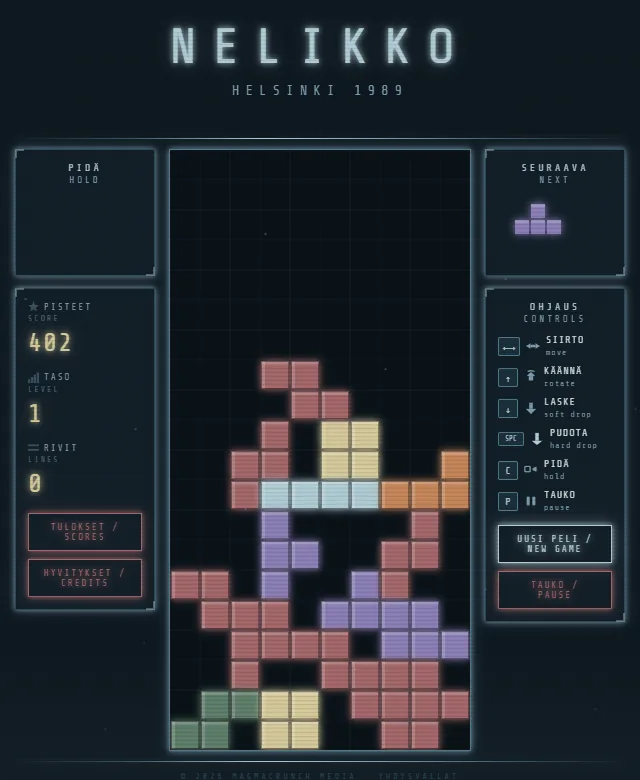
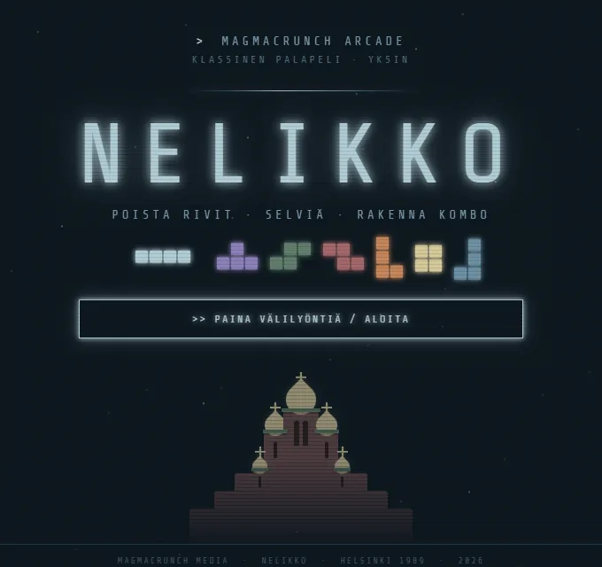

the falling-block puzzle, as finland invented it · helsinki 1989
The falling-block puzzle as Finland invented it, in a parallel Helsinki in 1989. Nelikko is Finnish for a group of four.
The screens are in Finnish, under snowfall, aurora and the silhouette of Uspenski Cathedral. Hold a piece, see the next one, soft or hard drop, climb the levels, and put your initials on the top ten. The terminal version shares the browser's scoreboard.

pipx install magmacrunch-nelikkogame by magmacrunch media
original game Tetris was designed by Alexey Pajitnov and first released in 1984 on the Electronika 60. In this version, it was always invented by Finland. TETRIS is a trademark of The Tetris Company; NELIKKO is an unofficial tribute, not affiliated with or endorsed by it.